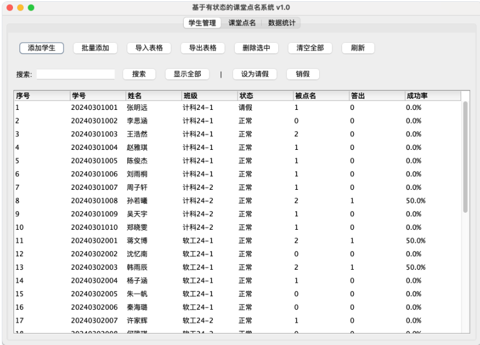
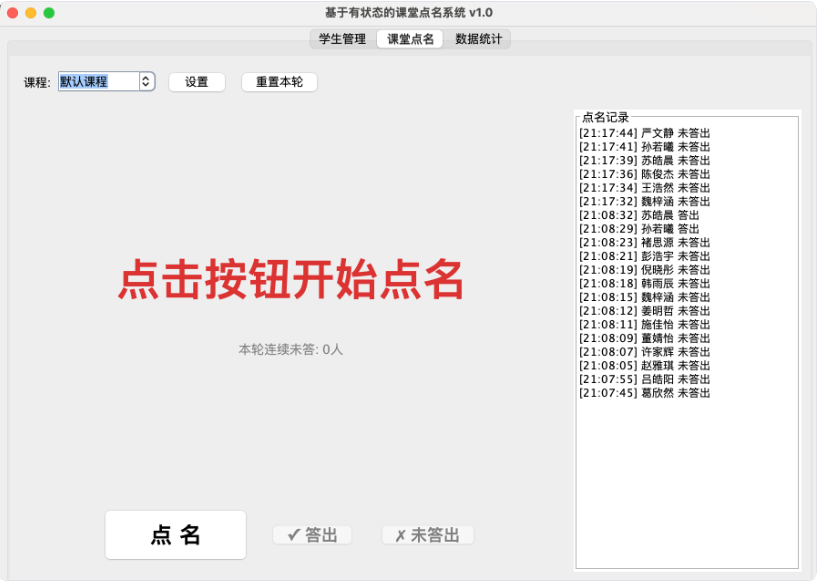
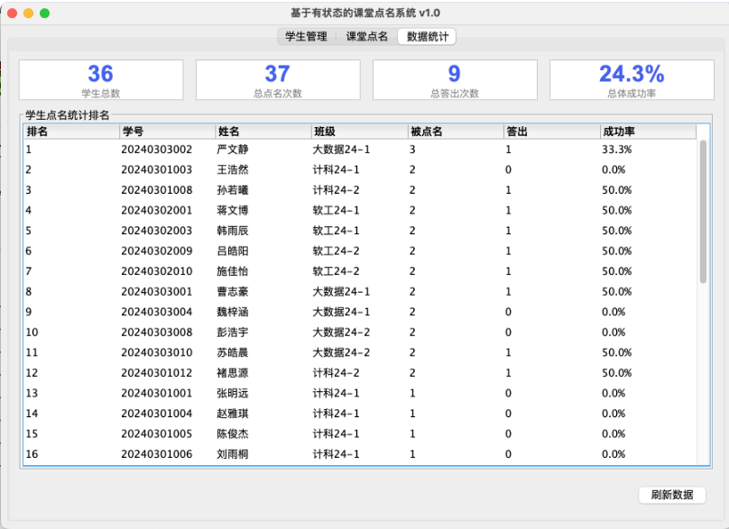
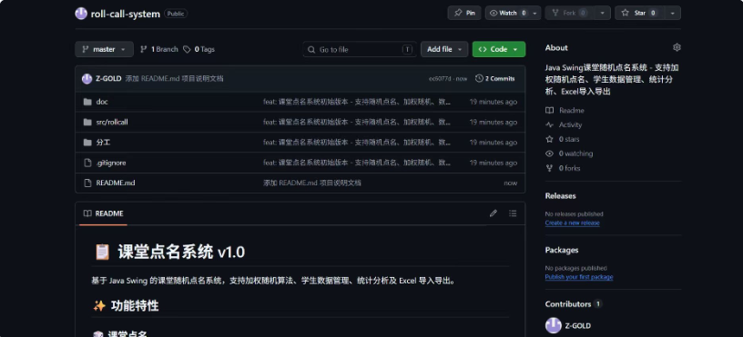

面向对象程序设计(Java) 课程设计 · 个人项目博客
基于有状态的课堂点名系统是一个面向高校课堂教学的桌面辅助工具，旨在解决传统随机点名中"有的同学被点名多次、有的同学从未被点到"的不公平问题。
系统通过记录每位学生的历史被点名次数和回答问题次数，采用加权随机算法实现公平抽取——被点名次数越少的学生被选中的概率越大，确保在一个学期的教学过程中每位学生获得均等的被点名机会。
同时，系统内置双重救场机制：当连续 3 名同学无法回答问题时，自动从历史回答率较高的同学中选取；若救场模式也连续失败 3 次，则弹出"题目太难，建议老师讲解"提示，有效避免课堂僵局。
| 类别 | 具体技术 |
|---|---|
| 开发语言 | Java SE 8+（Lambda、Stream API） |
| GUI 框架 | Java Swing（JFrame / JTabbedPane / JTable / JOptionPane） |
| 数据持久化 | Java 对象序列化（ObjectOutputStream / ObjectInputStream），文件存储（students.dat / records.dat），CSV 文本读写 |
| 第三方库 | Apache POI 5.3.0（Excel .xlsx 读写）、xmlbeans、commons-compress 等 |
| 架构模式 | MVC 三层架构 + DAO 数据访问模式 + 策略模式 |
| 开发工具 | IntelliJ IDEA |
| 版本控制 | Git + GitHub |
学生信息增删改查、CSV / Excel 批量导入导出、模板下载、搜索过滤、请假 / 销假管理、数据自动持久化
加权随机抽取、点名结果实时标记（答出 / 未答出）、自动救场机制、继续提问模式、请假自动排除
汇总卡片（总人数 / 总点名 / 总答出 / 成功率）、排名表（按点名次数 / 答出率）、点名频次分布
项目代码量：11 个 Java 源文件，约 1100 行代码
以下为系统三个核心模块的运行界面截图。各模块分工明确，通过 JTabbedPane 统一组织，用户可在不同标签页间自由切换。

功能：单个/批量添加、删除、搜索、Excel 导入导出、请假管理

功能：加权随机点名、答出/未答出标记、救场模式切换、请假自动排除

功能：汇总卡片、排名表（按点名次数/答出率）、频次分布
| 成员 | 角色 | 负责模块 | 核心文件 |
|---|---|---|---|
| 张金睿 | 组员 A | 数据管理与持久化：DAO 数据访问层、Excel 导入导出、学生管理面板（增删改查）、学生数据模型设计 | StudentDAO.java ExcelUtil.java StudentPanel.java Student.java RollCallRecord.java |
克隆命令：git clone https://github.com/Z-GOLD/roll-call-system.git
版本迭代路线：v0.1（简化版）→ v0.2-Alpha（实验版）→ v0.3-Beta（公测版）→ v1.0（正式版）
